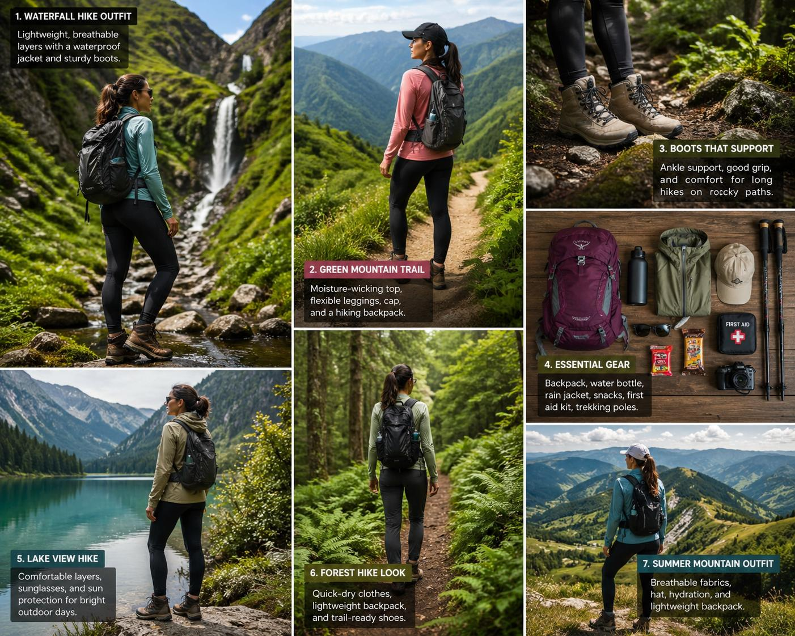

Local Blog UI System
Markdown turns into a polished, browser-ready blog with one file click.
Clean cards, soft shadows, responsive layouts, and automatic markdown rendering built for GitHub Pages or a simple double-click launch.

Featured story
The Ultimate Hiking Outfit Guide
Waterfalls, mountain trails, lakes, and cold-weather layering.Full image set
All 12 project images are displayed here
These scenes mirror the article sections and keep every uploaded image visible in the UI.
Blog list
Browse the markdown-powered stories
Every card pulls from a markdown source and opens into a dedicated single-post view.